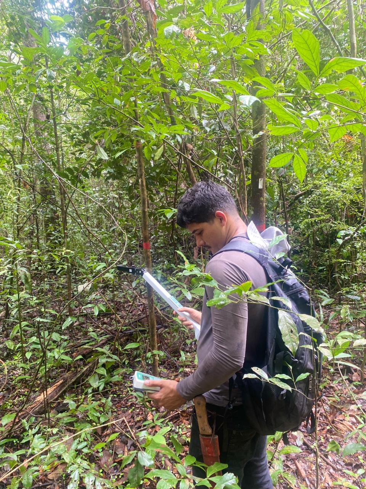

Sou estudante de Tecnologia da Informação e tenho interesse em desenvolvimento de sistemas, bancos de dados e programação web. Gosto de aprender novas tecnologias e criar soluções para problemas do dia a dia.
E-mail: cjhooann@gmail.com
Telefone: (91) 98464-2412
GitHub: https://github.com/jhoann7